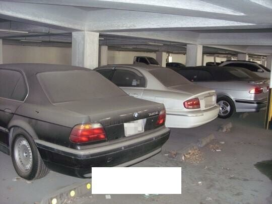

도박의 위험성

위 사진은 강원랜드 주차장이다. 차에 먼지가 쌓인 이유는 도박에 빠져나오지를 못하기 때문이다.
도박죄(賭博罪)는 대한민국 형법상 범죄로 재물로 도박을 하여 범해지는 죄이다.
도박을 한 사람은 1,000만원 이하의 벌금 또는 과료에 처한다(형법 246조 1항).
본죄의 보호법익은 건전한 노동관념 내지 경제도덕이다. 도박은 2인 이상의 자 사이에 행하여지는 것이며, 따라서 본죄는 필요적 공범이다.
'재물로써 도박한다'고 함은 재물(재산상의 이익을 포함함)을 걸고서 우연한 승패에 의하여 그 득상(得喪)을 결정하는 것을 말한다.
[1] 승패의 우연성은 당사자에 있어 주관적으로 불확실하면 족하고 객관적으로 불확실할 필요는 없으며 승패는 당사자 상호간에 전부 우연임을 요한다. 도박은 당사자 전원이 재물득상의 위험을 부담하는 점에서 복표(福票)의 경우와 구별된다.
도박행위의 착수가 있음으로써 본죄는 완성되며, 승패가 결정되거나 현실로 재물의 득상이 있음을 요하지 않는다. 도박행위가 일시 오락의 정도에 불과한 때(음식물, 담배 등)에는 도박죄가 성립하지 아니한다(형법 246조 1항 단서).
상습으로 도박하는 자(상습도박죄)에 대하여는 3년 이하의 징역 또는 2천만원 이하의 벌금에 처한다(형법 246조 2항).
또한 1,000만원 이하의 벌금을 병과할 수 있도록 하였다(형법 249조). 범인의 신분에 의한 가중이다. 도박의 상습이라 함은 반복하여 도박행위를 하는 습성을 말하며 이러한 습성이 있는 한 횟수의 다과, 기간의 장단, 영업성의 유무, 종류의 이동(異同)을 불문하고 상습범이 된다.
충동성
도박을 하려는 욕구 증가.
부정적인 결과라도 도박을 그만두지 못함.
잃은 돈을 회복하려고 큰 돈을 걸음.
도박 시간과 도박에 쓸 돈을 정하지 않음.
돈을 따면 그만두지 못함.
과몰입
도박의 빈도와 시간 증가.
도박에 지나친 관심.
시간이 나면 항상 도박을 함.
최소화
이긴 것만 이야기함.
도박하는 것을 숨김.
결과무시
모든 돈을 도박에 씀.
도박으로 재산을 고갈시킴.
도박으로 인한 돈 부족으로 남에게 의존함.
도박으로 잃은 돈을 다시 얻으려고 범죄도 마다하지 않음.
도박 외에는 관심이 없음.
특징
도박에 많은 시간을 투자함.
베팅 금액이 늘어나고 도박의 빈도가 증가함.
도박으로 인하여 돈을 빌림.
한 번에 큰 돈을 얻을 수 있다고 생각함.
도박을 그만 둘 수 있다고 생각함.
도박을 하는 것을 숨김.
도박을 하지 않으면 기분이 나빠짐.
도박을 좋아함.
항상 도박을 하려고 함.
진행과정
승리단계
잠깐 도박이 잘 되는 것에 도박에 대한 환상에 빠진다.
패배단계
도박이 잘 되지 않지만 계속 도박을 하려고 한다.
절망단계
도박에 지나치게 빠진다.
포기단계
도박으로 인하여 정신이 이상해진다.
도박 예방하기
3가지만 기억하자!
1. 도박은 돈을 잃는 과정일뿐이다!
-
게임장에 가면 돈을 내야하고 경마장이나 카지노에도 돈을 내야 합니다.
도박을 하는 곳에 가거나 복권, 토토 등을 구입하는 것 모두 분명 돈을 쓰는 행동이라는 점입니다.
도박은 결국 돈을 잃는 과정임을 반드시 기억하자!
2. 돈을 따는 순간 중독 위기에 직면했다는걸 자각하자!
-
승리의 경험이 도박에 대한 자신감을 만들고 도박판을 키우는 요소가 됩니다.
또 이런 돈을 따 본 경험은 우리의 뇌에 각인이 되어 도박을 지속하게 만든다는 사실을 잊지 말자!
3. 나를 진심으로 걱정해주는 사람들의 말을 듣자!
-
문자나 sns를 통해 여러분에게 다시 돈을 걸라거나
대박을 잡으라고 하는 사람들의 말을 듣고 유혹에 빠져들기보다는
가족들이나 여러분을 걱정해주는 친구들의 말을 신뢰하는 편이 훨씬 더 낫다!
이미 중독이 되었다면?
1. 도박을 돈 버는 수단으로 생각하지 말자!
2. 잃어도 감당할 수 있는 수준 내에서 하자!
3. 잃은 돈을 만회하려고 하지 말자!
4. 금액 한도를 정하고 지키자!
5. 시간 한도를 정하고 도중에 자주 쉬는 시간을 가지자!
6. 우울하거나 화가 났을 때는 도박을 하지 말자!
7. 도박과 다른 활동들의 균형을 유지하자!
8. 도박을 할 때 음주는 자제하자!
도박 문제로 상담받고 싶다면
전화 상담 : 국번없이 1336 (무료)
온라인 상담 : 도박문제 넷라인 사이트
자료 출처 : Google, 한국도박문제관리센터